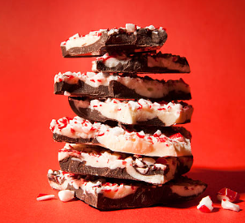

Peppermint Bark
A sweet and fresh treat.
By Kristina Razon

Total cook time:
Ingredients
- 12 oz dark chocolate, melted
- 3/4 teaspoon peppermint extract, divided
- 8 candy canes, regular size
- 16 oz white chocolate, melted
Directions
- Line a baking dish with aluminum foil. Place melted dark chocolate into a bowl. Add 1/4 teaspoon of peppermint extract and stir to combine.
- Pour the chocolate into the baking dish. Spread into an even layer, completely covering the bottom. Refrigerate for 25 minutes. Place candy canes in a large zip-top bag, and crush the candy canes into small pieces.
- Place melted white chocolate into a separate bowl. Add the remaining 1/2 teaspoon peppermint extract, and stir to combine.
- Drizzle the white chocolate evenly over the dark chocolate. Spread the white chocolate evenly over the dark chocolate. Sprinkle the crushed candy canes over the top and gently press them in with your hands. Refrigerate until the peppermint bark is set. Break into pieces by hand, and serve